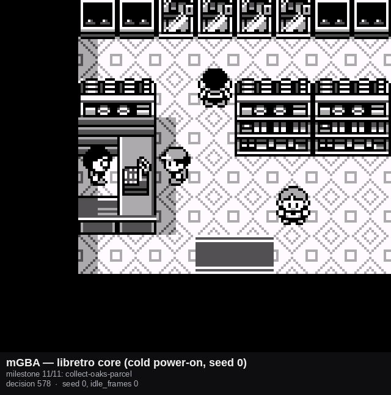

AgentGB · Route learning
The wall you hit walking home
An agent that reads nothing but the screen learned the walk to the shop perfectly and then could not learn the walk back. Not badly — at all. Two measured numbers that sum to a hundred are what told us it was impossible rather than merely hard, and the fix was not a bigger network. It was noticing that the cartridge had already said the thing out loud.
Two numbers that sum to a hundred
The route this agent is learning goes out and comes back. Pallet Town, up Route 1, into Viridian City, into the Mart to collect Oak's parcel — and then the same ground again in reverse, all the way home to Oak's lab. Viridian City and Route 1 are each crossed twice, and from almost every tile in them the two crossings want opposite directions.
A single student trained over both directions of Viridian City scores 33.53% on one task and 66.77% on the other. Those two numbers are not a pair of disappointing results. They sum to a hundred, and that is the signature of a partition: from any given start the shared student walks one way or the other, and whichever it picks, exactly one of the two tasks is satisfied. There is no third outcome and no middle ground.
Why that number shape matters
A policy scoring 40% and 45% is doing something imperfectly. A policy scoring 33.53% and 66.77% is doing something perfectly — it is just answering a different question than the one being asked. When two rates in a supposedly independent pair add to one, stop tuning and go and find out what the model cannot see.
Why no amount of training fixes it
What tells the two crossings apart is OAK's PARCEL sitting in the
inventory. The inventory is not drawn on the overworld screen. This agent reads a
4 × 36 × 40 picture and nothing else — no coordinates, no map register, no memory
read of any kind — so the input on the way out and the input on the way back are,
for practical purposes, the same input.
A function cannot return two different values for the same argument. This is not a capacity problem that a wider network or another thousand epochs reaches; it is a statement about what is representable. The 33.53/66.77 split is that statement, measured.
The first fix worked, and was abandoned anyway
The obvious answer is to go and look. Gen 1 does draw the bag's contents,
and the two states are visibly different — ▶OAK's PARCEL / CANCEL with
it, ▶CANCEL alone without. So the first design gave the agent a seventh
button, taught it to open the bag, read it, close it, and only then decide which way
to walk.
It was built, trained, and smoke-tested successfully. A real certification run put the harder of the two rooms at 5/5 and then 299/300. It genuinely worked.

It was thrown away on the captain's correction, and the reason is the interesting part. The game already announces that the parcel has been collected, in plain unmissable text, at the exact frame the milestone fires:
“BLUE got OAK's PARCEL!”
The cartridge, saying the quiet part out loudBuilding a seventh button, a bag-opening sequence, and an on-the-way-in-versus-on-the-way-out disambiguation at an identical menu picture was solving a problem the cartridge had already solved — one layer further from the screen than necessary. The bag check was not wrong in the sense of not working. It was wrong in the sense of reaching past an answer already sitting in plain text to go digging for a second, harder copy of the same fact.

collect-oaks-parcel milestone byte, on
a genuine cold power-on — captured on mGBA's libretro core rather than our own
emulator, seed 0, decision 578. The dialogue box is mid-draw here; the announcement
text lands in the frames immediately after.
The pattern that came out of it
Once you look for it, the shape is everywhere in this route: every goal in the chain ends with the cartridge announcing, in unique on-screen text, that it is done — and that announcement is the trigger for the next goal. A recogniser per announcement, a trained behaviour per goal, chained in order.
Nothing is deduced, nothing is inspected, nothing is hard-coded. The driver that implements this knows nothing about parcels, Oak, or any specific room; declaring a new stage is a longer list in a data file, never a change to the code.
Two design details are worth pulling out, because they are the whole difference between this and the interrupt mechanism the project already had:
A latch, not a check
The trigger screen is gone within a handful of frames
A per-decision recogniser — the kind that hands control back the instant its screen disappears — would see the announcement once and forget it on the very next decision. That is useless for a fact which, once true, stays true for the rest of the episode.
So the stage is latched: a single integer held across the episode, advanced once, never re-checked. Once a stage fires, every earlier recogniser is never consulted again, and the route itself has changed — this is not a momentary interruption of some other goal.
A nudge, not a retrain
The base network is proven byte-identical before and after
The behaviour each stage latches is a small separate head nudging a frozen base policy, at its original six-action width — no seventh button, no padding. Five links share one pooled adapter rather than five separate ones, which keeps peak memory during training well under 5 GB against a 20 GB ceiling that had cancelled a full retrain.
The base weights are hashed before training and after, and the hash is required to match. A fix that quietly moved the thing it was meant to leave alone would not be a fix.
The trigger did not need a crop, and that was checked first
Another recogniser in this project keys on a nickname prompt and needs a deliberate crop, to hide a species name a wider view would let it cheat on. This one takes the full observation, because the parcel announcement is not a screen that could plausibly be confused with anything else in the game.
That was verified before a recogniser was trained rather than assumed after. Playing the scripted teacher through the collection and recording the on-screen text at every decision found the exact string and the exact decision it appears on. Then the last recorded frame of successful episodes — from a 1,500-episode corpus whose episode lengths range from 13 to 34 decisions — was compared against a fresh live capture of that screen: byte-for-byte identical, zero difference, on every one of five spot-checked episodes of very different lengths.
The reason it is identical is structural rather than lucky. The dialogue box is opaque, and the success flag fires at a fixed point in the game's own script no matter which button got the player there. That is what makes "the last frame of a successful episode" a correct way to harvest training positives without any per-frame text matching at all.
The shipped recogniser scores 99.93% held-out accuracy and 99.96% balanced accuracy, trained on 1,500 positives against 6,000 negatives sampled from six other links' own corpora.
What it measured
Each of the five return-leg links certified on its own, with the adapter applied unconditionally, sampled at temperature 1.0, N=300 — alongside two floors, because a rate with nothing under it is not evidence:
| Link | Success | Random floor | Press-A floor |
|---|---|---|---|
| out-of-the-mart | 300 / 300 = 100.00% | 34.80% | 0.00% |
| south-out-of-viridian | 300 / 300 = 100.00% | 3.40% | 0.00% |
| back-down-route-1 | 300 / 300 = 100.00% | 1.20% | 0.00% |
| into-oaks-lab | 294 / 300 = 98.00% | 4.00% | 0.00% |
| receive-the-pokedex | 221 / 300 = 73.67% | 6.40% | 0.00% |
The two rows in bold are the doubling-back rooms — the entire reason the work exists. Both certify at 100.00%, against random floors of 3.40% and 1.20%. The mechanism resolves an ambiguity that a memoryless, unconditioned student provably could not.
N=300, not this project's usual 3,000. Three hundred clean attempts bound a failure rate near 1% by the rule of three.
And then the honest part
The first full sixteen-link cold-boot swarm, with everything wired in, reached the last link before the parcel is delivered — and scored 0 of 26 on it.
Not 60%. Zero. Fifteen of sixteen milestones at 100%, both hard rooms perfect, and the last one a complete failure.
It was worth having, because it was specific. The 73.67% above was the same
weakness measured in isolation, and the chain's own actual entry tile evidently sits
on the unlucky side of it consistently enough that no draw of 26 clears it. Isolated
replay showed the failure precisely: the adapter reproduces the teacher's first eight
moves exactly — left, then seven ups — and then, at the one
decision the teacher turns right toward Oak, presses down
and oscillates up/down at that junction for the rest of its
budget.
A second training draw with more epochs and a larger sampled corpus produced the identical failure at the identical junction. Not seed noise — stable across independent draws, which is its own finding: this project has now found three times that "more epochs" is not an answer to a genuinely blind tile.
The mechanism suspected, half confirmed and half refuted
The plausible story was that the frozen base holds a confident, actively wrong prior at that tile — it shares its room with several links the base was trained on — so the adapter has to overturn a strong opinion rather than fill an empty one.
Measured directly at the stuck tile, that half is true: the base reads
96.3–97.7% down — the wrong answer — under every
trained goal id.
The proposed fix, though, was refuted rather than left untested. Feeding the
untrained neutral conditioning row instead of the usual one gives 96.3%
down, statistically indistinguishable from what it replaced. The
identity transform passes features through unmodified, but the action head was never
trained on unconditioned features in isolation — so an "untrained" row is not the
same thing as an "unbiased" one. That is a distinction worth carrying out of here.
One id is measurably different, reading 61.3% right / 38.7%
down — not confidently correct, but the only one whose prior does not
actively fight the right answer. Retraining against it is the next thing worth
trying, and it was deliberately not tried here: that id's semantics for this
checkpoint are not established, and changing it risks four links in the same stage
that already work.
Where it ended up
The last link was closed in a later round — a fresh corpus for the conversation half of it, a dedicated goal for the press that starts the conversation (the base gets that right only 4.55% of the time unaided), a battle policy on the return crossing of Route 1 changed from flee to fight-or-flee after a real seed was traced into an infinite battle-menu deadlock, and two purpose-built start states so the corpora were not all the same starter.
Cold boot, N=150, sampled, the whole sixteen-link chain: 145/150 = 96.67% [92.4–98.6%]. Per starter — the standing rule now — Bulbasaur 87/90, Charmander 13/13, Squirtle 45/47, no starter anywhere near zero and all three intervals overlapping heavily.
One more result belongs here because it is the most useful kind. Running the same command without the already-shipped interrupt adapters gives a much worse 13/26 — and every one of those twelve extra failures is a known trap six links earlier, nothing to do with the return leg at all. A chain-level number only means what it claims once every already-fixed piece is actually wired in.
Every figure here comes from this project's own certification and swarm tooling against one named weights file, with its sample size, temperature and confidence interval recorded beside the command that produced it. The base network's hash was checked before and after every training run on this page and never moved. The wider arc is on the AgentGB progress page.
← Back to devlog